Link to my dashboard: Here
1. Giới thiệu
Báo cáo này bao gồm dữ liệu được thu thập từ một cửa hàng vận hàng trên nền tảng Shopee trong một giai đoạn 3 tháng, từ tháng 8 đến tháng 10 (2022). Thông tin được trình bày đến từ một cửa hàng hoạt động thực tế; vì lý do bảo mật, tên của cửa hàng sẽ không được tiết lộ trong báo cáo này.
Báo cáo này bao gồm 5 dashboard:
Tổng quan: tóm tắt thông tin cơ bản bao gồm doanh thu, tổng số đơn hàng, tổng chi phí, sự thay đổi doanh thu trong ba tháng
Doanh thu - Chi phí: Thông tin chi tiết về GMV và chi phí để phân tích hiệu suất tài chính và lợi nhuận của cửa hàng.
Ngày sales: Doanh thu được tạo ra từ các loại ngày khuyến mại khác nhau bao gồm: Ngày đột biến, Mini Spike Day và ngày bình thường.
Sản phẩm: Xác định sản phẩm phổ biến nhất theo doanh thu và theo tổng số đơn hàng.
Đơn hàng hủy: Xác định lý do phổ biến nhất mà khách hàng hủy đơn hàng.
2. Mục tiêu
1. Đánh giá hiệu suất bán hàng tổng thể của cửa hàng trong giai đoạn ba tháng.
2. Xác định các sản phẩm phổ biến nhất được bán trên nền tảng.
3. Khảo sát tính hiệu quả của các phương pháp vận chuyển và đơn vị vận chuyển khác nhau.
4. So sánh hiệu suất bán hàng trên các khu vực hoặc đối tượng khác nhau.
5. Xác định các lý do phổ biến nhất cho việc hủy đơn hàng.
6. Phân tích các phương thức thanh toán được ưa chuộng nhất bởi khách hàng.
7. Xác định các xu hướng trong bán hàng và hành vi của khách hàng theo thời gian.
3. Phân tích
1. Sales Overview
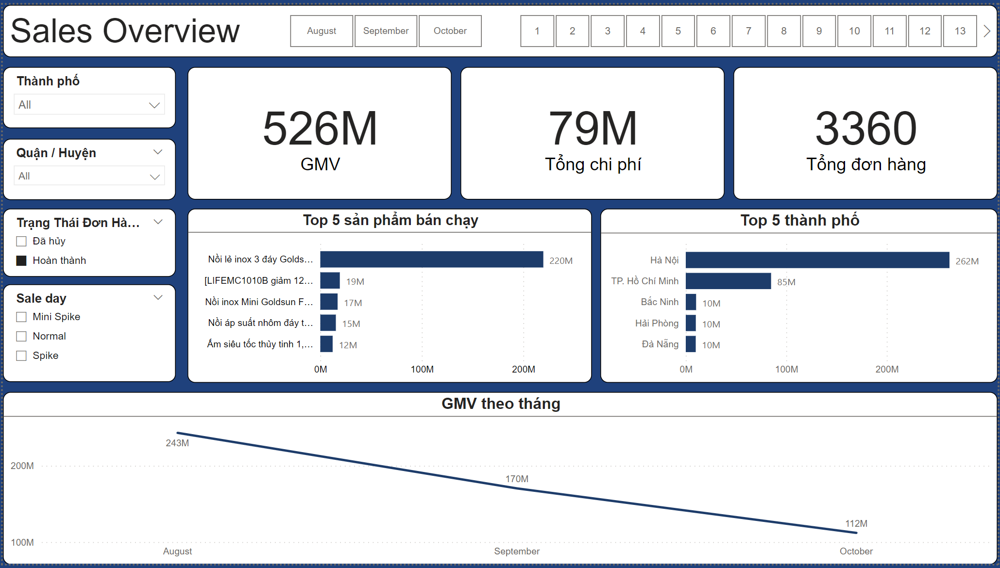
Trong giai đoạn từ tháng 8 đến tháng 10 2022, cửa hàng đã thu được tổng doanh thu là 710 triệu đồng từ 4564 đơn hàng. Tuy nhiên, đã có 1204 đơn hàng bị hủy, tương đương với 35% tổng số đơn hàng hoặc 185 triệu đồng.
Trong số tất cả các đơn hàng nhận được, có tới 65% đến từ khách hàng ở Hà Nội và TP. Hồ Chí Minh. Sản phẩm "Nồi lẻ inox 3 đáy Goldsun" một mình chiếm đến 42% tổng số sản phẩm đã bán.
Doanh thu từ tháng 8 đến tháng 10 giảm dần, từ 243 triệu đồng xuống còn 112 triệu đồng vào tháng 10.
Tình hình vận hành của shop có xu hướng tệ hơn rất nhiều vào các tháng sau.
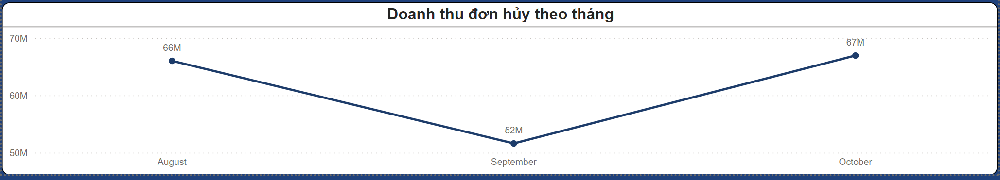
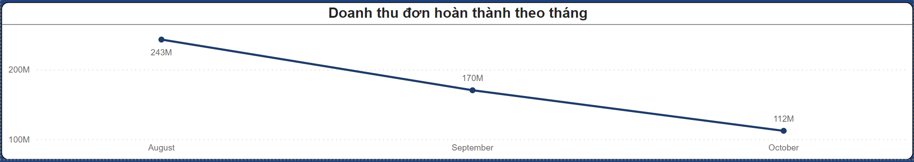
Trong khi doanh thu từ đơn hủy có xu hướng tăng từ 66 triệu vào tháng 8, lên 67 triệu vào tháng 10. Thì doanh thu từ đơn hoàn thành lại giảm cực mạnh từ 243 triệu còn 112 triệu.
2. GMV - Cost
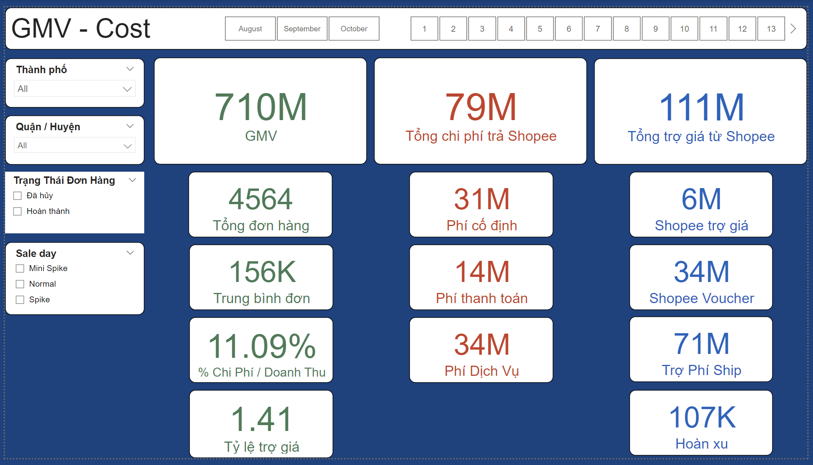
Dashboard này bao gồm 3 phần chính:
Cấu trúc chi phí thanh toán cho Shopee và phí được trợ giá từ Shopee
Tỷ lệ chi phí và doanh thu
Tỷ lệ trợ giá: được tính bằng Tổng trợ giá / Tổng chi phí thanh toán
Tổng chi phí thanh toán cho Shopee bao gồm 3 loại phí:
Phí cố định, phí thanh toán và phí dịch vụ (phí mua gói Freeship Xtra và Hoàn xu), đây là 3 loại chi phí cơ bản thanh toán cho Shopee khi đơn hàng được hoàn thành.
Báo cáo này chưa bao gồm chi phí Marketing nội sàn, ngoại sàn, và các chi phí vận hành khác.
Tỷ lệ chi phí / doanh thu của shop khá cao
Tỷ lệ chi phí / doanh thu rơi vào 11%, đây là tỷ lệ chấp nhận được, nhưng do số lượng đơn hàng hủy quá cao dẫn tới sau khi trừ toàn bộ đơn hủy, tỷ lệ này tăng lên thành 15%.
Với tỷ lệ trợ giá là 1.41, shop đang được Shopee hỗ trợ khá ổn
Dưới 1: không tốt
Từ 1 - 2: Ổn
Trên 2: Tốt
3. Campagin days
Trong tháng 8, Shopee có 1 ngày sale lớn nhất tháng là ngày Spike 8-8; chiếm 24,92% tổng doanh thu toàn tháng, và 2 ngày sale nhỏ hơn là Mini Spike day (15, 25); chiếm 45,31%. Tuy nhiên, shop đang có xu hướng bất thường khi doanh thu từ ngày 25 cao hơn doanh thu từ ngày Mega sale là 8-8.
Doanh thu baseline từ các ngày bình thường duy trì ổn định qua các tháng, dao động trong khoảng từ 2 - 4 triệu, tuy nhiên doanh thu từ các ngày sale lớn thì lại giảm dần qua các tháng dẫn tới doanh thu toàn tháng giảm mạnh.
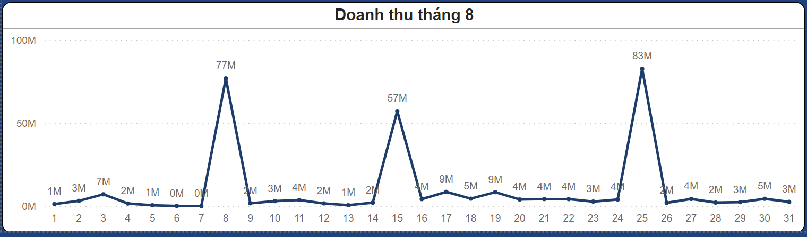
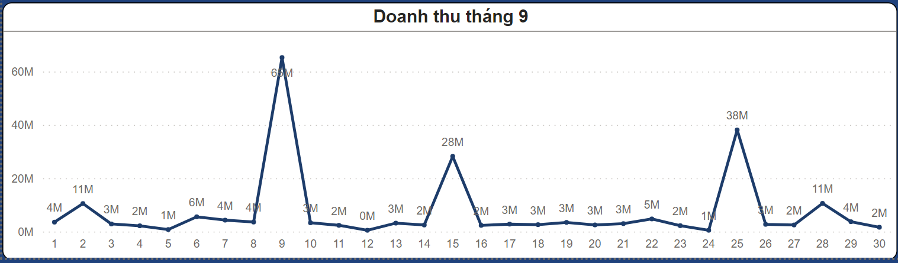
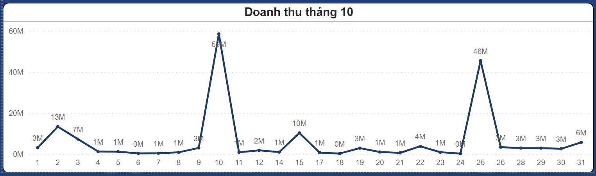
Shop có tỷ lệ phân bổ phương thức giao hàng Hỏa tốc cực thấp dưới 1%. Điều này có thể lý giải nguyên nhân do shop thuộc ngành hàng gia dụng có cân nặng sản phẩm cao, sản phẩm bán chạy nhất của shop có tổng cân nặng là 1kg, trung bình cân nặng toàn sản phẩm là 1,44 kg, khiến chi phí vận chuyển tăng lên rất cao.
Đối với trường hợp này, shop có thể duy trì gói hỗ trợ phí vận chuyển FreeShip Xtra từ Shopee, shop có thể hưởng lợi từ việc tăng tỷ lệ chuyển đổi từ khách hàng nhờ khách hàng áp được mã Freeship.
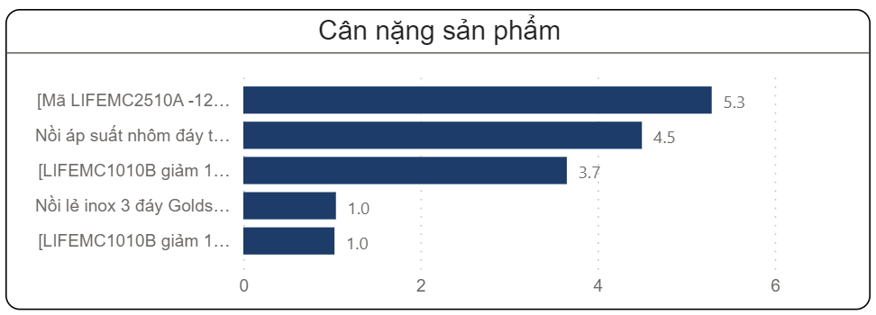
4. Product detail
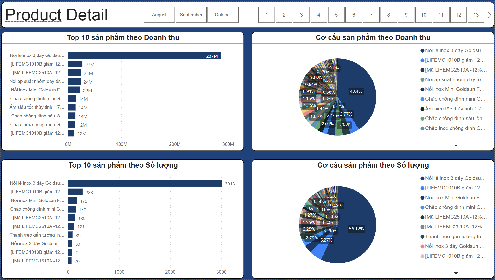
Hiện tại tình hình kinh doanh của shop đang phụ thuộc rất nhiều vào 1 mã hàng là “Nồi lẻ Inox 3 đáy Goldsun…” khi mà doanh thu từ mã hàng chiếm hơn 40% doanh thu toàn shop. Điều này mang tới nguy cơ cho shop đó là sự phụ thuộc vào 1 sản phẩm quá lớn, đòi hỏi shop phải duy trì được chất lượng đầu vào và nguồn cung ổn định cho sản phẩm.
Do đó, kế hoạch những tháng tới của shop có thể làm đó là bắt đầu xây dựng các chiến dịch mới nhầm phát triển các mã sản phẩm có khả năng thay thế được sản phẩm chủ lực, điều này làm giảm rủi ro về sự phụ thuộc vào 1 sản phẩm, và tăng doanh thu cho shop đến từ các sản phẩm khác.
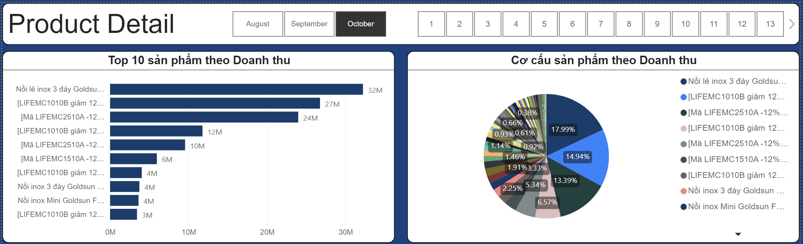
5. Order canceled
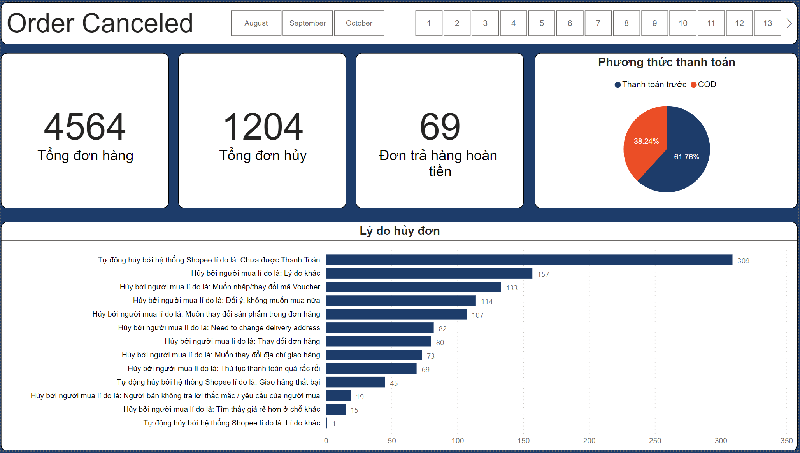
Như đã phân tích ở phần trên, shop đang có tỷ lệ hủy đơn hàng cực cao, lên đến 35%, với lý do phổ biến nhất là hủy tự động bởi Shopee do khách hàng chưa thực hiện thanh toán. Đây là nguyên nhân khách hàng khi thanh toán chọn phương thức là chuyển khoản trước, nhưng khách hàng lại không thực hiện thao tác thay toán ngay lúc giao dịch dẫn tới hủy đơn tự động bởi Shopee.
Với dữ liệu được tổng hợp lại, có thể thấy khách hàng lựa chọn phương thức thanh toán trước chiếm tới 61,76%, ngoài nguyên nhân khách hàng không hoàn thành thao tác thanh toán do chủ đích thì có thể liên quan tới vấn đề kỹ thuật của nền tảng Shopee. Do đó, shop trước hết có thể liên hệ trực tiếp với nhân viên Shopee để xác định nguyên nhân.
4. Tổng hợp
Sau khi kiểm tra tổng quan toàn gian hàng trong 3 tháng, đây là 1 số nhận định:
1. Tình hình kinh doanh của shop giảm mạnh và tỷ lệ hủy đơn của shop đang ở mức báo động.
Tình hình set up chương trình chạy cho ngày sale đang gặp vấn đề, khi mà doanh thu từ 3 ngày sale (1 spike, 2 mini spike) giảm mạnh.
Nguyên nhân hủy đơn chủ yếu các lý do chưa được xác thực cụ thể nguyên nhân, 309 đơn hủy tự động bởi Shopee do chưa được thanh toán, 157 đơn hủy vì lý do khác.
2. Doanh thu shop đang phụ thuộc vào 1 mã sản phẩm chủ lực
3. Khách hàng của shop từ 2 thành phố lớn là Hà Nội và Hồ Chí Minh chiếm tới 90%
4. Shop đang được Shopee hỗ trợ khá ổn khi tỷ lệ trợ giá đạt 1.41
5. Tỷ lệ chi phí / doanh thu đang rất cao, chiếm tới 15% khi chỉ mới trừ các chi phí thanh toán từ Shopee, chưa bao gồm chi phí Marketing nội sàn, ngoại sàn, các chi phí vận hành và chi phí đầu vào sản phẩm.
5. Tỷ lệ phân bổ phương thức vận chuyển Hỏa tốc cực chênh lệch khi chỉ chiếm dưới 1%
7. Khách hàng có xu hướng thanh toán trước hơn khi tỷ lệ chiếm 62%
5. Đề xuất
1. Dựa vào các nhận định thu thập được, dưới đây là 1 số đề xuất dành cho shop.
2. Đảm bảo chất lượng nguồn cung đầu vào và đảm bảo dự trữ đủ số lượng hàng cho các ngày sale lớn đặc biệt là ngày Mega sale.
3. Tập chung thông điệp truyền thông và tệp khách hàng quảng cáo đến từ Hà Nội và TP.Hồ Chí Minh
4. Liên hệ nhân viên chăm sóc gian hàng của shop để tìm hiểu nguyên nhân khách hủy đơn có đến từ vấn đề kỹ thuật của nền tảng Shopee hay không
5. Xây dựng chiến dịch truyền thông đẩy các mã sản phẩm có tìm năng để xây dựng sản phẩm có khả năng thay thế sản phẩm chủ lực hiện tại.
6. Có thể hủy gói Hoàn Xu từ Shopee để cắt giảm chi phí thanh toán do khách hàng sử dụng hoàn xu của shop rất ít, nhưng vẫn duy trì gói Freeship Extra do shop thuộc ngành hàng có cân nặng sản phẩm cao.
7. Có thể hủy giao hàng hỏa tốc do tỷ lệ khách hàng lựa chọn phương thức hỏa tốc quá thấp, trong trường hợp shop muốn rút gọn quy trình vận hành.